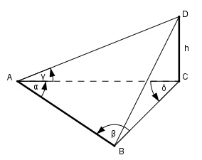

>Aufgabe 187 Die Höhe h eines Berges soll bestimmt werden. Dazu misst ein Vermesser von den Eckpunkten einer waagerechten Standlinie AB mit einer Länge von 326,75 m aus die Horizontalwinkel α = 83,1° und β = 64,5° sowie den Höhenwinkel γ = 26°. Wie hoch ist der Berg?

δ = 180° - α – β = 180° - 83,1° - 64,5° = 32,4° Im Dreieck CDB: Fall SWW: Sinussatz: AB AC --------- = ------- |*sin β sin δ sin β 326,75 m * sin 64,5° AC = ---------------------- = sin 32,4° 326,75 m * 0,9026 = ------------------- = 550,4 m 0,5358 Im Dreieck ACD: h tan γ = ---- |*AC AC h = AC * tan γ = 550,4 m * tan 26° = = 550,4 m * 0,4877 = 268,4 m